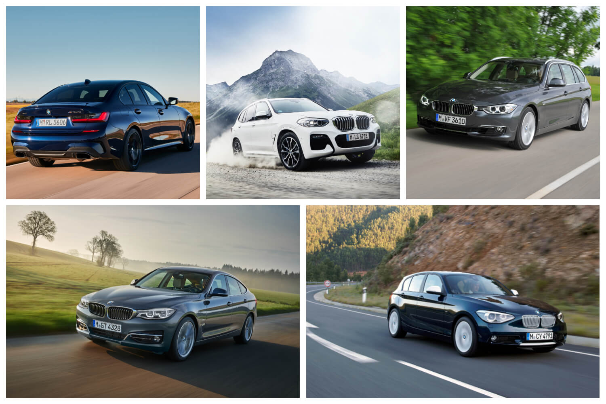
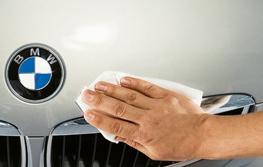

Bayerische Motoren Werke Aktiengesellschaft es un fabricante de automóviles y motocicletas, cuya sede se encuentra en Múnich, Alemania. Sus principales subsidiarias son: MINI, Rolls-Royce Motor Cars y BMW Bank. En abril de 2010 era el líder mundial en ventas entre los fabricantes de gama alta.
Nuestros modelos

Servicio Post Venta
El servicio posventa de BMW ofrece mantenimiento especializado, repuestos originales y técnicos certificados para garantizar el rendimiento del vehículo. Destacan programas como BMW Service Inclusive (mantenimiento prepagado), BMW Mobile Care (asistencia en carretera) y un diagnóstico técnico avanzado basado en la llave del auto para precios transparentes.

Garantía
La garantía oficial de BMW para coches nuevos (entregados desde enero 2022) suele ser de 3 años sin límite de kilometraje, cubriendo defectos de fabricación y mano de obra en talleres autorizados. Incluye 12 años contra corrosión en carrocería. Se puede extender y el estado se consulta en la app My BMW

Sana Competencia Alemana
| Marca | Año de creación | Origen |
| MERCEDES | 1926 | Alemania |
| AUDI | 1910 | Alemania |
| TOYOTA | 1933 | Japón |